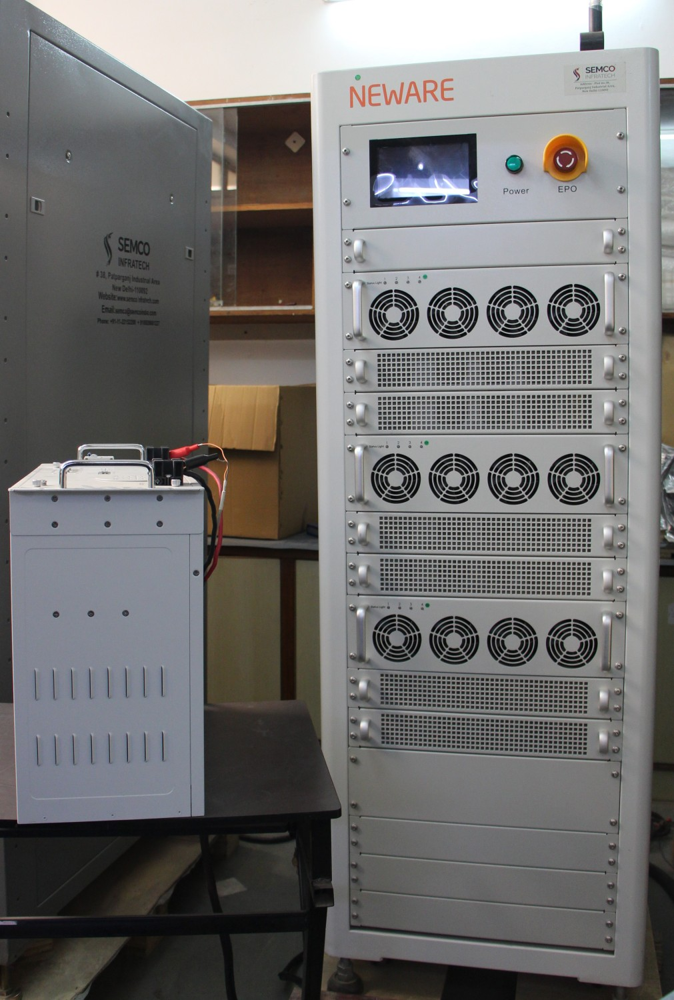
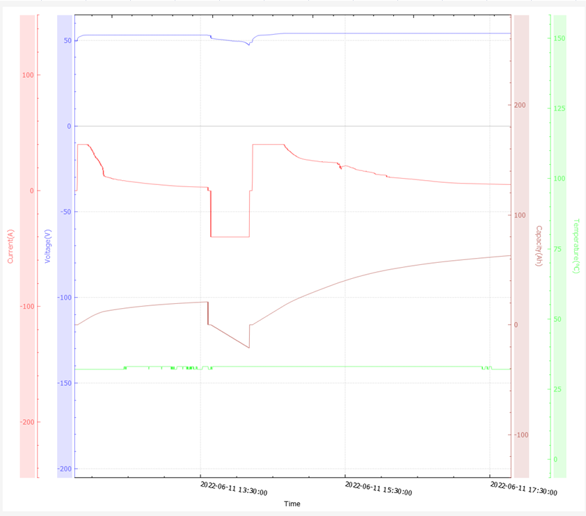
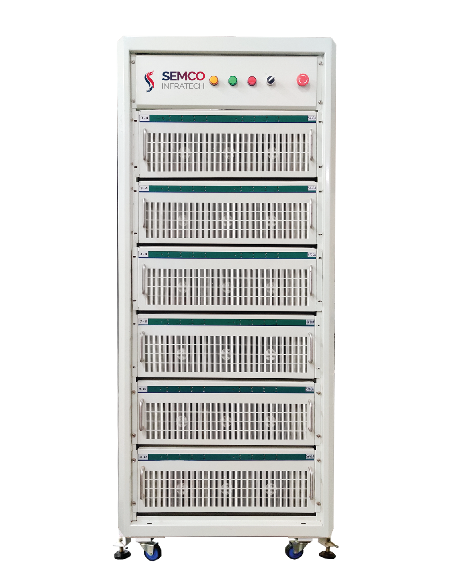
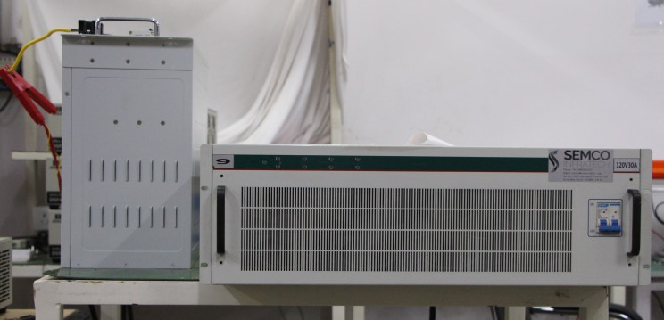
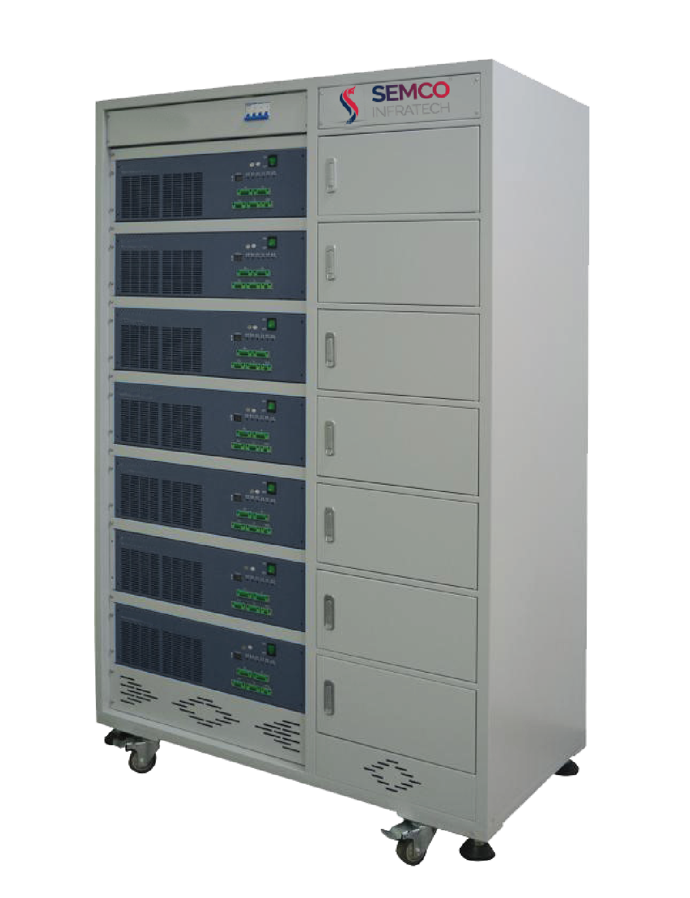
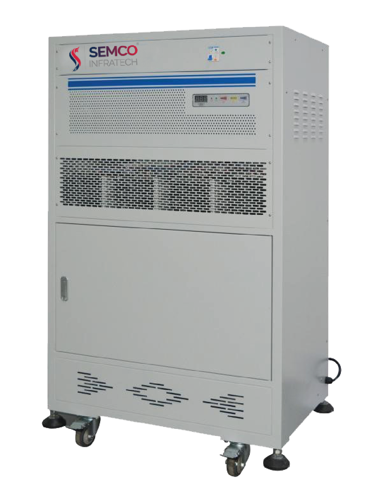

Introduction
The Battery Charge and Discharge Cabinet is a versatile and efficient system designed to manage the charging and discharging processes of batteries. It provides a secure and organized solution for storing and maintaining battery units. By controlling and optimizing the charging and discharging operations, the cabinet ensures the longevity and performance of batteries, making it an essential component in various industries that rely on battery-powered equipment.
Principles of battery charge and discharge cabinet
The Battery Charge and Discharge Cabinet operates based on fundamental principles to effectively manage the charging and discharging of batteries. The cabinet utilizes advanced charging algorithms and monitoring systems to regulate the voltage, current, and temperature during the charging process, ensuring optimal and safe charging conditions for the batteries. Additionally, it incorporates discharge protection mechanisms to prevent over-discharge and prolong the battery life. The cabinet's design includes features such as multiple charging slots, individual charging channels, and intelligent charging control, allowing for simultaneous charging and monitoring of multiple batteries. These principles of precise regulation and intelligent management enable the cabinet to maximize battery performance, extend battery life, and provide a reliable and efficient power source for various applications.

But,
Why is a Battery charge and discharge cabinet is required?
A Battery Charge and Discharge Cabinet is essential for several reasons. Firstly, it ensures the safe and efficient charging and discharging of batteries. By controlling the voltage, current, and temperature, the cabinet minimizes the risk of overcharging, which can lead to battery damage or even safety hazards. Similarly, it prevents over-discharging, which can cause irreversible damage to batteries. Secondly, the cabinet provides a centralized and organized storage solution for batteries, reducing the risk of loss, misplacement, or damage. It allows for easy access and retrieval of batteries when needed, streamlining operations and saving valuable time. Additionally, the cabinet often incorporates monitoring and diagnostic capabilities, providing real-time information on battery health, performance, and maintenance requirements. This proactive approach enables timely intervention, ensuring optimal battery performance and longevity. Overall, a Battery Charge and Discharge Cabinet is crucial for maximizing battery efficiency, extending battery life, ensuring safety, and facilitating efficient battery management in various industries and applications.
After understanding the requirements, you might be thinking what its benefits are then below information will help you,

A Battery Charge and Discharge Cabinet offers numerous benefits for battery management. Firstly, it enhances safety by providing precise control over the charging and discharging processes. By regulating voltage, current, and temperature, the cabinet minimizes the risk of overcharging, which can cause battery damage or safety hazards. It also prevents over-discharging, preserving the integrity and lifespan of the batteries. Secondly, the cabinet improves efficiency and productivity. With multiple charging slots and individual charging channels, it enables simultaneous charging and monitoring of multiple batteries, saving time and optimizing workflow. The organized storage design reduces the risk of battery loss or damage, ensuring easy access and retrieval when needed. Additionally, the cabinet often incorporates intelligent charging algorithms and monitoring systems, providing real-time data on battery health and performance. This information facilitates proactive maintenance, allowing for timely interventions and maximizing battery lifespan. Ultimately, a Battery Charge and Discharge Cabinet streamlines battery management, enhances safety, increases efficiency, and prolongs battery life, making it an indispensable tool for industries reliant on battery-powered equipment.
Semco
Semco is a leader in supplying lithium-ion battery testing and assembly equipment. It has enthralled its customers with various customized solutions. One such product that Semco offers is a Battery charge and discharge cabinet that offers high quality and multifunctional approach for charging and discharging the batteries. Talking about this highly automated and customized machine here are some key features.
Semco Battery Charge and Discharge Cabinet
The Semco Battery Charge and Discharge Cabinet is a versatile and reliable solution available in various models, such as the SI BCDS 70/100V (10/20/40) (1.4/2/4kW) 1CH. This cabinet is specifically designed to efficiently manage the charging and discharging processes of batteries, offering a range of features to ensure optimal performance and safety.


One of the key features of the Semco Battery Charge and Discharge Cabinet is its ability to conduct battery charge and discharge cycle tests. This functionality allows for comprehensive testing of batteries, evaluating their capacity, performance, and overall health. By conducting these tests, the cabinet enables users to assess the condition of batteries accurately and make informed decisions about their usage and maintenance.

The cabinet incorporates precise charging and discharging protection mechanisms to safeguard batteries during the process. It allows users to set specific voltage thresholds for battery charging and discharge protection. This ensures that batteries are not overcharged or over-discharged, which can lead to damage or reduced lifespan. The ability to customize these protection settings provides flexibility and adaptability to different battery types and requirements.

Furthermore, the Semco Battery Charge and Discharge Cabinet features four distinct test steps: charging, discharging, shelving, and cycling. These steps allow for a comprehensive battery management process. The charging step efficiently charges the batteries, ensuring they reach their optimal capacity. The discharging step allows for controlled discharge, enabling the assessment of battery performance under specific load conditions. The shelving step provides a resting period for batteries, mimicking their storage state and assessing their self-discharge characteristics. The cycling step involves repetitive charge and discharge cycles, simulating real-world usage scenarios to evaluate battery behavior and longevity.
The cabinet incorporates safety protections to prevent potential hazards. It includes an anti-reverse connection protection function, which ensures that batteries are correctly inserted into the charging slots, preventing accidents or damage caused by incorrect polarity. Additionally, the cabinet allows users to set upper and lower voltage limits as an additional safety measure. If the battery voltage exceeds or falls below these set limits, the cabinet will automatically stop or adjust the charging/discharging process, protecting the battery from potential damage.
How Does the Battery charge and discharge cabinet works?
The Battery Charge and Discharge Cabinet operates through a systematic process to efficiently manage battery charging and discharging. It typically includes multiple charging slots or compartments, each equipped with an individual charging channel. The cabinet incorporates advanced charging algorithms and monitoring systems to regulate the charging parameters such as voltage, current, and temperature. When batteries are inserted into the charging slots, the cabinet identifies each battery and initiates the appropriate charging protocol. It ensures that the batteries receive the optimal charging conditions, preventing overcharging and optimizing the charging process for maximum efficiency.
Additionally, the cabinet often includes discharge protection mechanisms to prevent over-discharging, preserving battery life and performance. The intelligent monitoring system continuously tracks battery health, providing real-time information on parameters such as capacity, voltage, and internal resistance. This data enables proactive maintenance and timely interventions, ensuring the longevity and optimal performance of the batteries. Overall, the Battery Charge and Discharge Cabinet functions by precisely regulating the charging and discharging processes, monitoring battery health, and providing a secure and organized storage solution for efficient battery management.
Got the solution to your battery worries then what are you waiting for book a live demo and operate your battery plant without any hassles and tensions. If you liked our newsletter then do not forget to share and comment and stay tuned for our next Newsletter on “HYNN Battery Charge and Discharge Cabinet”. Till then “Happy Batteries”.